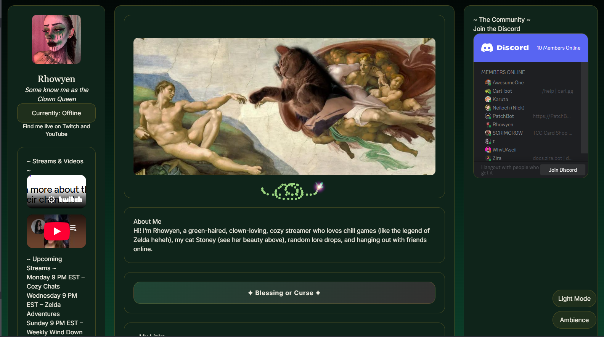
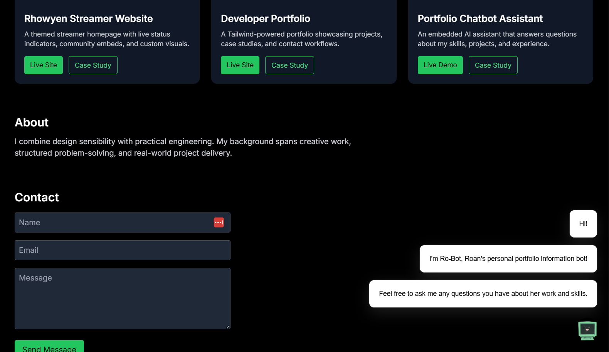
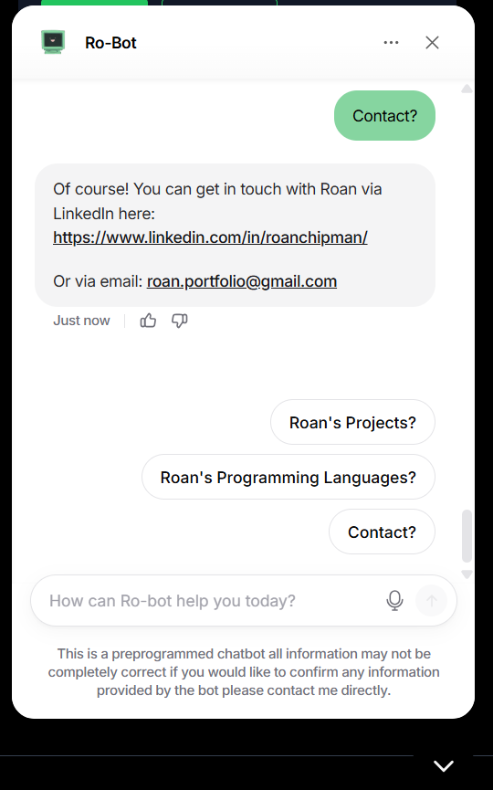

Web Developer & Designer
I am a web Developer with experience building mobile-first, responsive websites using HTML, CSS, Tailwind CSS, and JavaScript. I have proven ability to take projects from concept through deployment using static hosting platforms such as GitHub Pages. Strong foundation in front-end development, UI/UX principles, accessibility awareness, and third-party integrations. Experience working independently and delivering client-facing projects.
Projects

Rhowyen Streamer Website
Designed and developed a custom streamer website using HTML, CSS, and JavaScript. Implemented responsive layouts optimized for mobile users and integrated external platforms for streaming and social engagement. Delivered a client-facing project from concept to deployment using GitHub Pages.

Developer Portfolio
Built a mobile-first developer portfolio using Tailwind CSS to showcase projects, case studies, and contact workflows. Structured reusable components, ensured responsive behavior across devices, and deployed the site using GitHub Pages with working navigation and form handling.

Portfolio Chatbot Assistant
Integrated an AI-powered chatbot into a personal portfolio to provide interactive responses about projects and technical skills. Implemented third-party scripts safely within a static site and evaluated user experience tradeoffs for optional interactive features.
About
I combine design sensibility with practical engineering.
My background spans creative work, structured problem-solving,
and real-world project delivery.